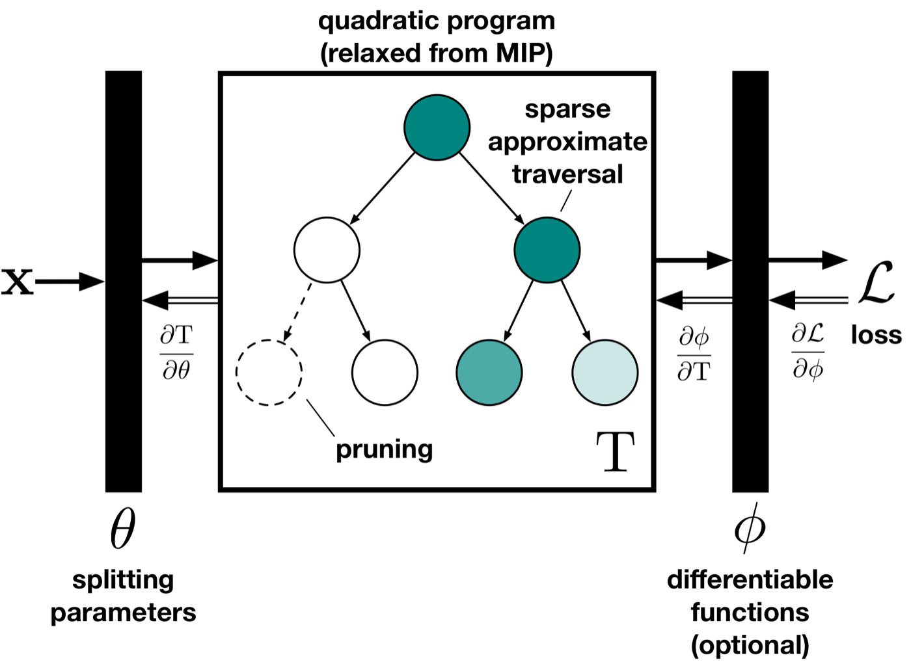
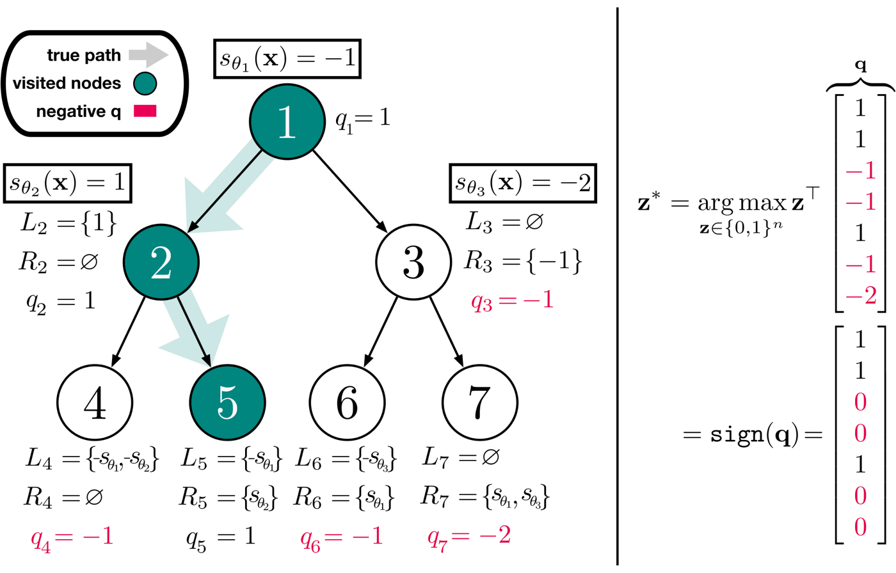
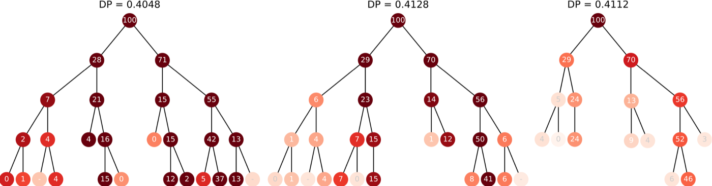

- Higgs の誤分類率 0.2201単一の木の中で最良（CART 0.3430、ANT 0.2430、NDF-1 0.2644）。森の NODE（0.210）や XGBoost（0.2334）にも近い（論文 Table 2）。
- 学習 18,642 秒（ANT は 62,335 秒）Higgs での学習時間。確率的な分岐の木（NDF-1 は 43,593 秒）より速く、GOSDT はメモリ不足、Optree-LS は 3 日で終わらなかった。
- \(\lambda\) でノードを刈り込む刈り込みの強さ \(\lambda\) を大きくすると、木の一部がまるごと刈り込まれる。Glass（深さ 6、\(\lambda = 10\)）では、学習中に残るノードの割合が 45〜55% に落ち着いた。
二分木の学習法には貪欲法・確率的な緩和・混合整数計画の 3 つがあり、それぞれに弱点がある
CART や ID3 のような貪欲法は、各ノードに届いたデータで分岐の基準を最適にするので、一般に木全体としては最適でない。CART の分岐の基準は、木全体の損失では木が育たないことがあるため、わざと木全体の損失と違うものにしてある。分岐を確率に置き換える確率的な緩和（ソフトな決定木）はすべての分岐を勾配法で同時に学べるが、解がまばらにならず、各データがすべての枝に寄与する。刈り込まれた木の分布は扱いにくいので、刈り込みの原理的な方法もない。混合整数計画は大域的に最適な木を求めるが、計算できるのは学習データが数千件程度までで、汎化の保証もよくわかっていない。
この論文は整数計画の考え方と勾配法の考え方を組み合わせる。木の離散的なパラメータ（各データがたどる経路とノードの刈り込み）は整数計画として書き、それをまばらな解をもつ形で緩和して、連続的なパラメータ（分岐の関数と予測関数）を argmin 微分で学ぶ（図1）。

各ノードへの「報酬」を経路上の分岐の値の最小値で定めると、整数計画の最適解がデータのたどる経路を表す
深さ \(D\) までの木で、分岐ノード \(t\) は \(s_{\theta_t}(\boldsymbol x) < 0\) なら左、そうでなければ右へデータを送る。データ \(\boldsymbol x\) がノード \(t\) に着くかどうかを \(z_t \in \{0, 1\}\) で表し、ノード \(t\) への報酬 \(q_t\) を、根から \(t\) への経路上で右に進む祖先の \(s_{\theta_{t'}}(\boldsymbol x)\) と、左に進む祖先の \(-s_{\theta_{t'}}(\boldsymbol x)\) の最小値とする。経路上のすべての分岐の向きと合うときだけ \(q_t\) は正になるので、\(\boldsymbol z^\top \boldsymbol q\) を最大にする \(\boldsymbol z\) が、\(\boldsymbol x\) が実際にたどる経路を表す（補題 1、図2）。\(z_t\) は \([0, 1]\) に緩めてもかまわない。

木の構造も学ぶため、ノード \(t\) を残すかどうかを \(a_t \in \{0, 1\}\) で表し、全データについての次の混合整数計画を考える。親が刈り込まれたら子も刈り込まれ（\(a_t \le a_{p(t)}\)）、刈り込まれたノードにはデータが届かない（\(z_{it} \le a_t\)）。\(\lambda\) は残すノードの数と、データが通ることで得る報酬との釣り合いを決める。
二次の正則化を足して強凸な二次計画にすると解がほとんどいたるところで微分でき、木の上の単調回帰として速く解ける
この混合整数計画の解は分岐のパラメータについて区分的に一定なので、勾配は 0 になる。そこで \(a_t\) を \([0, 1]\) に緩め、\(\boldsymbol z\) に左右対称な二次の正則化を足す。並べ替えると次の二次計画 \(\mathrm T_\lambda\) になる。
目的関数は強凸なので、\(\mathrm T_\lambda\) はリプシッツ連続で、ほとんどいたるところで微分できる。正則化は解を左右の均等な分割に寄せ、データが分岐の境目から余裕（\(|s_{\theta_t}| > 0.5\)）をもつように促す。OptNet のような汎用の解法も使えるが、論文は制約の木構造を使って専用の解き方を導いた。\(\boldsymbol a\) を決めれば \(z_{it} = \operatorname{Proj}_{[0, a_t]}(q_{it} + \tfrac12)\) と閉じた形で求まり、\(\boldsymbol a\) についての問題は木の上の単調回帰（isotonic optimization）になる（命題 2）。これは、制約を破る辺の両端のノードを 1 つのグループにまとめていく一般化した PAV アルゴリズムで、高々 \(|\mathcal T|\) 回の併合で厳密に解ける。各グループの値も閉じた形で求まる（命題 3）。
\(\boldsymbol q\) を最初に 1 回だけ並べ替えておけば、順方向の計算は時間 \(O(n|\mathcal T|\log(n|\mathcal T|))\)、記憶 \(O(n|\mathcal T|)\) で済む。逆方向では、グループの分け方と各グループの支持集合だけを覚えておけば、\(\partial a_t / \partial q_{it'}\) を閉じた形で書ける。\(\boldsymbol q\) から分岐のパラメータ \(\theta\) への勾配は、最小値をとった経路を通って自動微分で流れる。論文は、この専用の解き方が汎用の微分可能な解法（cvxpylayers）より速いことを示している。
葉の予測は多数決ではなく経路を入力とする学習した関数で行い、分岐・構造・予測を損失から同時に学ぶ
葉に届いた学習データの多数決のような経験則の代わりに、入力 \(\boldsymbol x\) と経路 \(\boldsymbol z\) から予測する関数 \(f_\phi\) を学ぶ。全体の目的は次のとおりで、ミニバッチごとに \(\mathrm T_\lambda\) で経路と刈り込みを求め、誤差逆伝播で \(\theta\) と \(\phi\) を更新する。
これは決定木を深層ネットワークの 1 つの層として埋め込み、\(\boldsymbol z\) を中間の表現として使うことにあたる。分岐の関数も予測関数も微分できれば何でもよく、実験では分岐に線形関数（または線形 ＋ ELU）、予測関数に線形関数または多層パーセプトロン（MLP）を使った。教師あり学習だけでなく、入力の一部の特徴から残りを回帰する自己教師ありの学習で、階層的クラスタリングの木も学べる。
大きな表形式のデータで単一の木の中で最良かそれに並ぶ精度を出し、確率的な分岐の木より速く学習できた
NODE の論文の設定に従い、回帰の Year、Microsoft、Yahoo（二乗誤差）と、二値分類の Click、Higgs（誤分類率）を使った。比べたのは、CART、最適な木の Optree-LS と GOSDT、確率的な分岐の DNDT、NDF-1、ANT、森の NODE と XGBoost である（NODE と XGBoost は NODE の論文の値）。結果は 4 回の平均で、学習時間は 3 日を上限とした。
| 手法 | Click 誤分類率 | Higgs 誤分類率 | Click 学習時間 | Higgs 学習時間 |
|---|---|---|---|---|
| GOSDT | メモリ不足 | メモリ不足 | – | – |
| Optree-LS | 時間切れ | 時間切れ | – | – |
| DNDT | 0.4866 | メモリ不足 | 681 秒 | – |
| NDF-1 | 0.3344 | 0.2644 | 3,768 秒 | 43,593 秒 |
| CART | 0.3426 | 0.3430 | 3 秒 | 113 秒 |
| ANT | 0.4035 | 0.2430 | 75,600 秒 | 62,335 秒 |
| この論文 | 0.3340 | 0.2201 | 524 秒 | 18,642 秒 |
| NODE（森） | 0.3312 | 0.210 | – | – |
| XGBoost（森） | 0.3310 | 0.2334 | – | – |
表1 分類のデータでの結果（論文 Table 2 の平均値。標準偏差は省略）。
回帰でも、Year の二乗誤差は CART の 96.0 に対して 77.9 で、ANT（77.8）と同程度だった。学習時間は ANT の 4,674 秒に対して 1,354 秒である。論文は、この方法がどの課題にも使え、単一の木の手法すべてに勝つか並び、森の手法に近づき、データの大きさに対してよくスケールすると述べる。森の手法はどのデータでも単一の木より精度が高いが、そのぶん可視化や解釈は難しい。付録の小さなデータ（Mushrooms、FICO、Tictactoe）では、この論文の方法は GOSDT と Optree-LS より誤分類率が低く、学習も速かった。ただし CART は最も速く、Tictactoe では最適な木の手法やこの論文の方法よりも誤分類率が低かった（0.1576 と 0.2669）。
階層的クラスタリング（Glass、Covtype）では、樹形図の純度が Glass で 0.468、Covtype で 0.459 と、専用の手法（gHHC、階層的 k-means、BIRCH）と同程度だった。\(\lambda\) を大きくすると、樹形図の純度を大きく変えずに、ノードや木の一部がまるごと刈り込まれた（図3）。

整数計画の形を借りて構造と分岐を勾配法で同時に学ぶ方法で、最適性は保証せず、予測には学習した関数を使う
- 何を最適にするか：深さの上限 \(D\) を決め、刈り込みで構造を選びながら、分岐の関数と予測関数を下流の損失で学ぶ。学習は確率的勾配法なので、得られるのは局所的な解である。論文は、整数計画による最適な木は汎化の性質がよくわかっておらず、確率的勾配法には汎化の利点が知られている点を、この方針の理由に挙げる。
- 予測時の分岐：緩和した二次計画の解 \(\boldsymbol z\) は、確率的な緩和と違ってまばらで、刈り込まれたノードにはデータが届かない。予測はデータごとに学習した関数 \(f_\phi(\boldsymbol x, \boldsymbol z)\) で行い、実験ではこれに MLP も使っているので、葉ごとに 1 つのラベルを返す従来の決定木とは解釈のしかたが異なる。
- ほかの方法との関係：論文は TAO（Carreira-Perpiñán & Tavallali 2018）を、木の構造と分岐を直して小さく誤差の少ない木にするが、最適ではない方法として挙げる。線形（斜め）の分岐を連続的に最適化する点は、確率的な分岐の ORCT と共通する。一方、軸に平行な分岐を保ったまま勾配法で学ぶ方向は GradTree が扱っている。
@inproceedings{zantedeschi2021learning,
title = {Learning Binary Decision Trees by Argmin Differentiation},
author = {Zantedeschi, Valentina and Kusner, Matt J. and Niculae, Vlad},
booktitle = {Proceedings of the 38th International Conference on Machine Learning (ICML 2021)},
series = {Proceedings of Machine Learning Research},
volume = {139},
pages = {12298--12309},
publisher = {PMLR},
year = {2021}
}
ページの数値は ICML 2021 の出版版（PMLR）の本文と表で確かめた。図と付録の小さなデータの実験は arXiv 2010.04627 v2 による。所属は出版版の表記。